Im Büro gibt es viel zu entdecken. Findet die Dinge und sagt genau, wo sie sind. Danach gibt es eine Runde Tabu.
🔍 Suchbild📍 Wo? & Wohin?🔤 Tabu🗣️ Frei sprechen
Niveau wählen
Was gibt es alles zu sehen?
Schaut genau hin! Beschreibt reihum die Lage der Dinge so genau wie möglich.
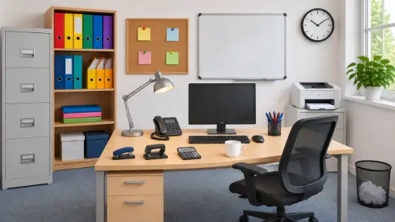
🔍 Such-Spiel: Eine Person nennt etwas aus der Liste — die anderen suchen es im Bild und beschreiben im ganzen Satz, wo es ist. Wer es zuerst richtig beschreibt, ist als Nächstes dran.
Findet diese Sachen
Tippt eine Karte an, wenn ihr das Ding im Bild gefunden und die Lage beschrieben habt.
🟦 der🟩 das🟥 die
📋 Die ganze Wortschatzliste
Alle Wörter zum Büro — für alle gleich. Das ist euer Wortvorrat für Tabu, Rate-Spiel und die Artikel.
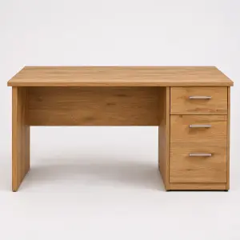
der Schreibtisch
der Bürostuhl
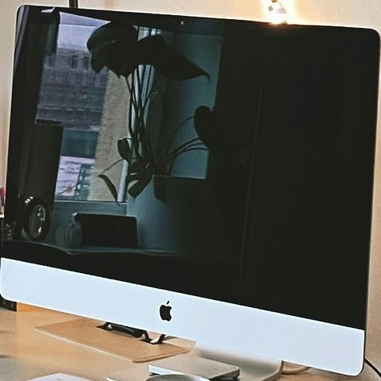
der Bildschirm
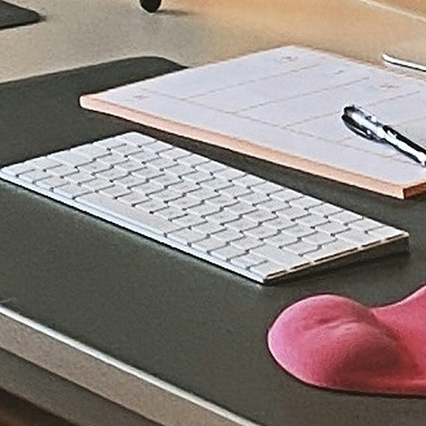
die Tastatur
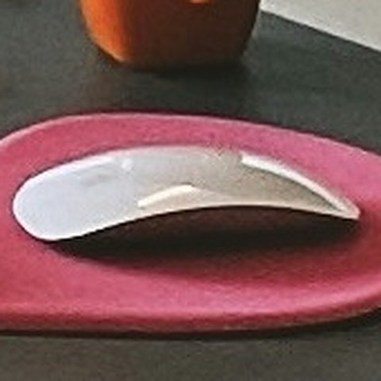
die Maus
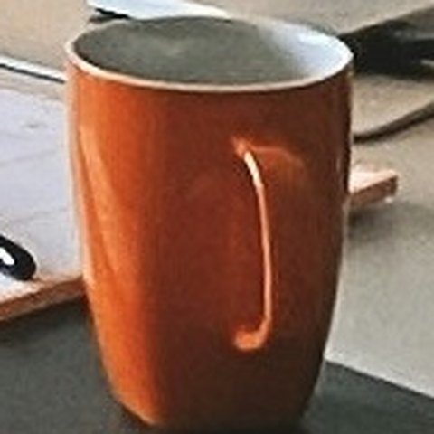
die Tasse
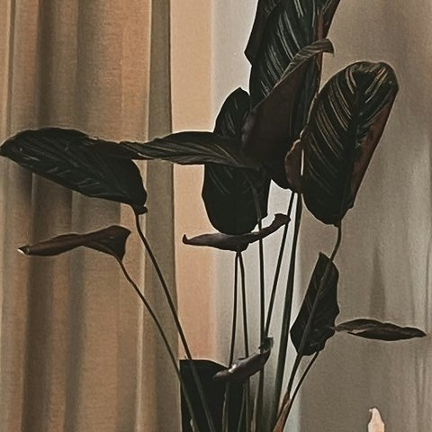
die Pflanze
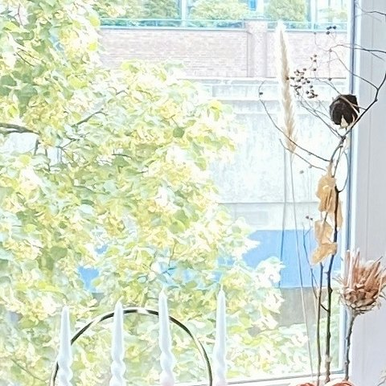
das Fenster
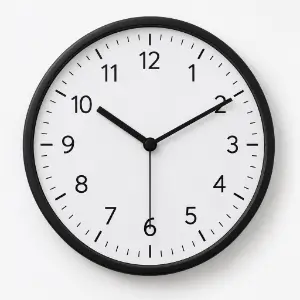
die Uhr
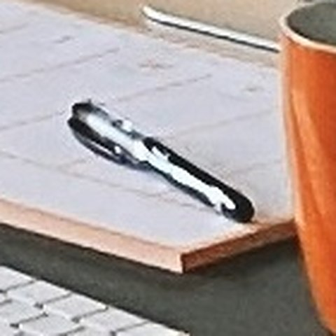
der Stift
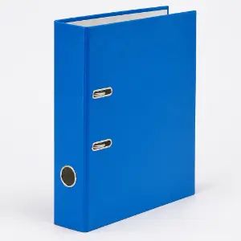
der Ordner
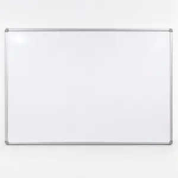
das Whiteboard
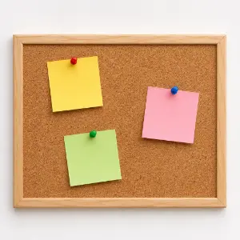
die Pinnwand
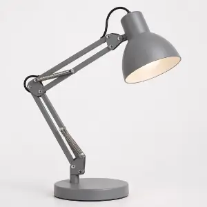
die Schreibtischlampe
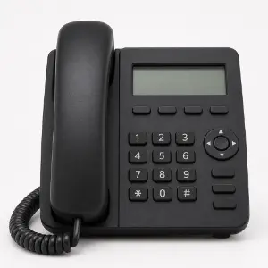
das Telefon
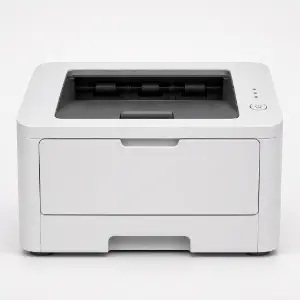
der Drucker
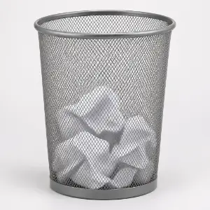
der Papierkorb
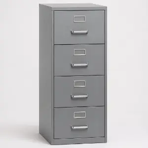
der Aktenschrank
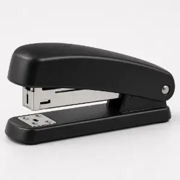
der Tacker
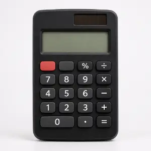
der Taschenrechner
🎁 „Ich sehe etwas, das …"
Eine Person tippt auf „Neues Wort", sieht Bild + Wort und beschreibt nur mit Präpositionen, wo es ist — die anderen raten!
🤫 Dein geheimes Wort
Bereit?
Nur die beschreibende Person schaut · beschreibe die Lage, sag das Wort nicht!
🗣️ So beschreibst du: „Es befindet sich …" · „Es liegt / steht / hängt …" + Präposition + Dativ. Jeder Klick gibt ein neues Wort aus der ganzen Wortliste.
📍 Präpositionen
Beschreibt die Lage der Dinge im Bild — für alle gleich. Nehmt euch, was zu eurem Niveau passt.
Wo? → Dativ
Einfache Wo?-Fragen. Antwortet im ganzen Satz zum Bild.
auf
„Die Tasse steht auf dem Schreibtisch.“
in
„Die Pflanze steht in einem Topf.“
neben
„Neben der Tastatur liegt die Maus.“
vor
„Vor dem Schreibtisch steht ein oranger Stuhl.“
hinter
„Hinter dem Bildschirm ist die Wand.“
an
„Am Fenster hängt ein Vorhang.“
🧠 Dativ-Artikel: der → dem · das → dem · die → der.
Wo? & Wohin? → Dativ & Akkusativ
Frage Wo? (Lage) → Wechselpräposition + Dativ. Bildet zu jeder einen Satz zum Bild.
in
„Im Blumentopf wächst eine große Pflanze.“
an
„An der Wand hängt ein Leuchtstab.“
auf
„Auf dem Notizblock liegt ein Stift.“
unter
„Unter dem Fenster ist ein Heizkörper.“
über
„Über der Kamera ist ein Ringlicht.“
neben
„Neben dem Bildschirm steht ein Stativ mit Kamera.“
vor
„Vor dem Bildschirm liegt eine weiße Tastatur.“
zwischen
„Die Tasse steht zwischen dem Notizblock und dem Bildschirm.“
🧠 Dativ-Artikel: der → dem · das → dem · die → der · Plural → den (+n).
Wohin? → Akkusativ
Etwas bewegt sich — Frage Wohin? (Richtung) → Akkusativ.
auf + Akk.
„Stell die Tasse auf den Tisch.“
an + Akk.
„Häng den Vorhang an das Fenster.“
neben + Akk.
„Leg den Stift neben die Tastatur.“
🧠 Akkusativ-Artikel: der → den · das → das · die → die · Plural → die. Merksatz: Wo? = Dativ · Wohin? = Akkusativ.
Für Fortgeschrittene: präzise beschreiben
Beschreibt die genaue Lage mit anspruchsvollen Präpositionen — gern mehrere Angaben in einem Satz.
oberhalb + Gen.
„Oberhalb des Bildschirms leuchtet ein langer Leuchtstab.“
innerhalb + Gen.
„Innerhalb des Ringlichts sieht man die Wand.“
inmitten + Gen.
„Inmitten der Kerzen steht ein goldener Ring.“
gegenüber + Dat.
„Gegenüber dem Fenster steht das Ringlicht.“
entlang + Gen.
„Entlang des Fensters hängt ein heller Vorhang.“
mehrteilig
„Rechts auf dem Schreibtisch, direkt neben dem Bildschirm, steht eine Kamera auf einem schwarzen Stativ.“
🧠 Genitiv-Präpositionen: oberhalb / innerhalb / inmitten / entlang + Genitiv (des / der). gegenüber steht mit Dativ. Kombiniert sie für präzise Beschreibungen.
🔤 Tabu
Erkläre das Wort oben — aber ohne die verbotenen Wörter! Jeder Klick gibt ein neues Wort aus der ganzen Wortliste.
Erkläre dieses Wort
Bereit?
🚫 Diese Wörter sind tabu
Tippe auf „Neue Karte"
⏱️ Spielidee: 60 Sekunden pro Runde. Für jedes erratene Wort einen Punkt. Verbotenes Wort benutzt → Karte futsch. Zwei Teams!
🗣️ Frei sprechen
Sprecht frei — nutzt den Wortschatz aus dem Bild. Die Fragen passen sich eurem Niveau an.
A2/B1
Bild
Was siehst du auf dem Bild? Nenne fünf Dinge.
Mein Tisch
Was liegt auf deinem Schreibtisch?
Farben
Welche Farben haben die Dinge im Büro?
Alltag
Was brauchst du jeden Tag? Warum?
B1/B2
Arbeit
Wo und als was arbeitest du — oder möchtest du arbeiten?
Arbeitsplatz
Beschreibe deinen Schreibtisch: ordentlich oder chaotisch?
Homeoffice
Lieber im Büro oder im Homeoffice? Warum?
Diskussion
Sind Meetings sinnvoll oder Zeitverschwendung? Was meinst du?
Frage-Runde
Stell deinem Partner 3 Fragen zu seinem Arbeitstag.
Geschichte
Erfinde eine Geschichte: Ein Tag im Büro geht schief. Was passiert?
B2/C1
Diskussion
Macht das Großraumbüro produktiver oder krank? Begründe deine Meinung.
Zukunft
Wie sieht das Büro in zwanzig Jahren aus? Was verschwindet, was bleibt?
Work-Life
Sollten Arbeitgeber Homeoffice vorschreiben dürfen? Wäge Vor- und Nachteile ab.
Monolog
Beschreibe zwei Minuten lang das Bild so genau, dass dein Partner es zeichnen könnte.
🔑 Redemittel: „Ganz vorne / hinten sieht man …", „Direkt daneben …", „Links / rechts von … befindet sich …", „Im Vordergrund / im Hintergrund …"
🏆 Das große Quiz
Mehrere Runden rund ums Büro: Wortschatz, Artikel, Wo? & Wohin? und Büro-Alltag. Pro Frage gibt es genau eine richtige Antwort — das Quiz passt sich eurem Niveau an.
Runde 1 · Frage 10 von 6
🏅 Als Wettkampf: Zwei Teams, abwechselnd. Wer die richtige Antwort hat, muss zusätzlich einen eigenen Satz mit dem Wort bilden — erst dann gibt es den Punkt.